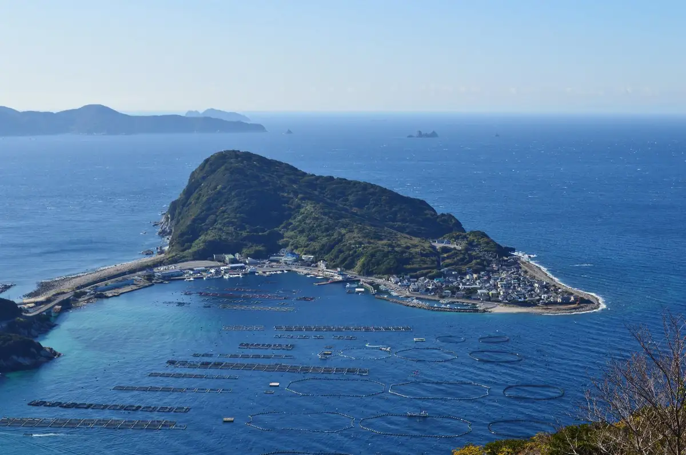
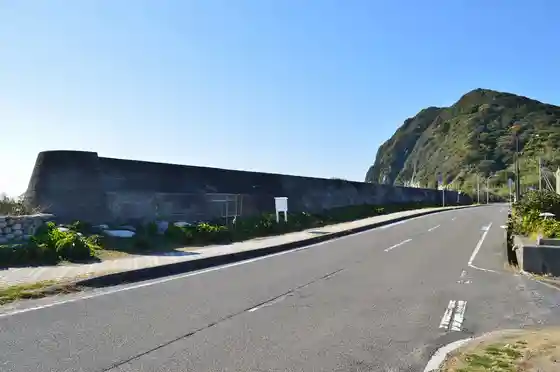
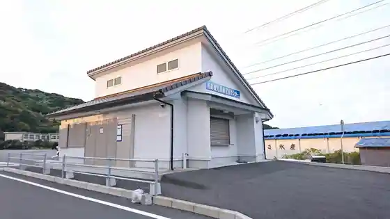
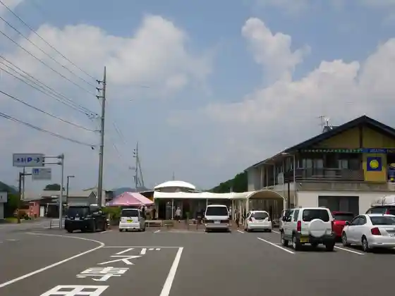

Otsuki, Kochi
Otsuki · Kochi
Otsuki
Highlighted on the Kochi map.

Stay
Beruriifu Otsuki
Dining
Sakana Gokoro
O Konomi Kimi
Tani Sengyo Shokudo
Nagisa
Tosa Chikara Buta Ya
Sights
Kashiwa Shima
Kashiwa Shima Sekitei

Kashiwa Shima Kankojoho Hasshin Center

Odo Lookout
Roadside Station Otsuki

Ryugahama Campground